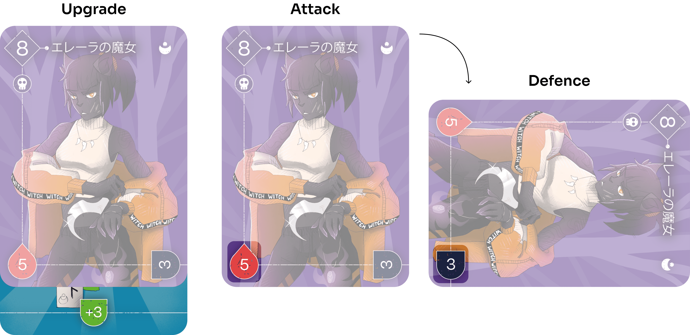
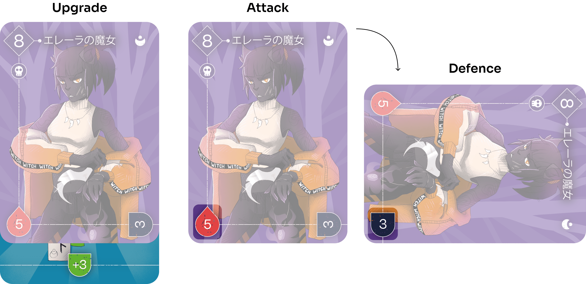

"Vacanze Liguri TCG" is a card game concept inspired by Ligurian folklore. Although there is no complete rulebook, the numerical values have been included with a UX designer's perspective. In fact, they are displayed with a logic for a possible game mode (e.g. the defence values are rotated to follow the position of the card, and in the top left corner of each card there is a distinct shape so that you can immediately recognise whether it is an object or a character). Before developing the cards, a series of key arts was made. The objective was to better define the general mood of the game: a mix between japanese old-school anime with the ligurian landscape.
Role
Illustrator, UX design, Layout design.
Softwares used
Clip studio paint, Illustrator.


 
